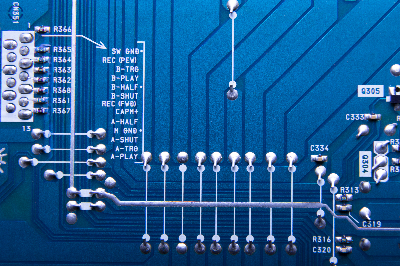

Circuitos Integrados
O que são:
Os circuitos integrados são circuitos electrónicos funcionais, constituídos por um conjunto de transístores, díodos, resistências e condensadores, fabricados num mesmo processo, sobre uma substância comum semicondutora de silício que se designa vulgarmente por chip.

Circuito integrado: Funções:
- Temporizador
- Oscilador
- Amplificador
- Controlador
Localização da primeira empresa a desencolver um Circuito Integrado
A texas instruments incorporated é uma empresa de tecnologia no estado do Texas(EUA) que foi a responsável
em desenvolver o primeiro circuito integrado do mundo em 1958